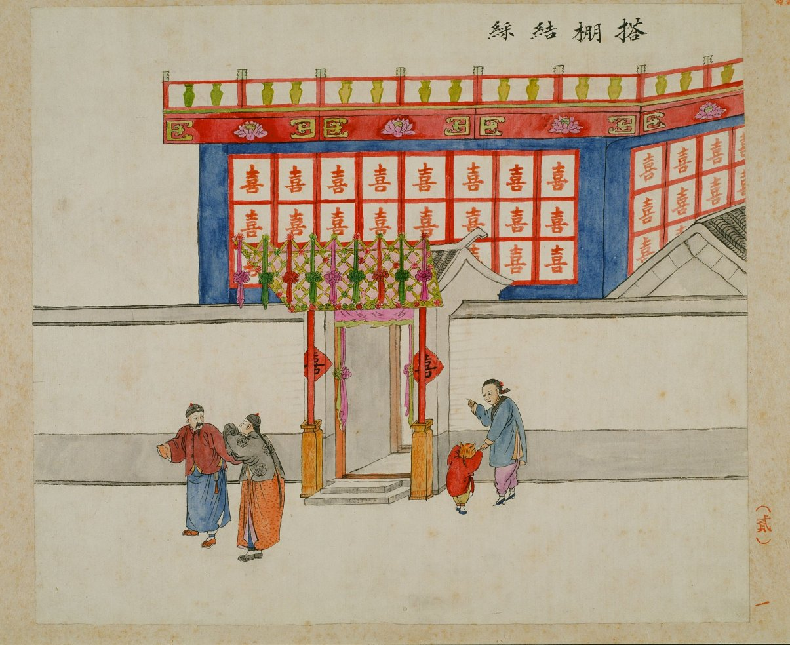
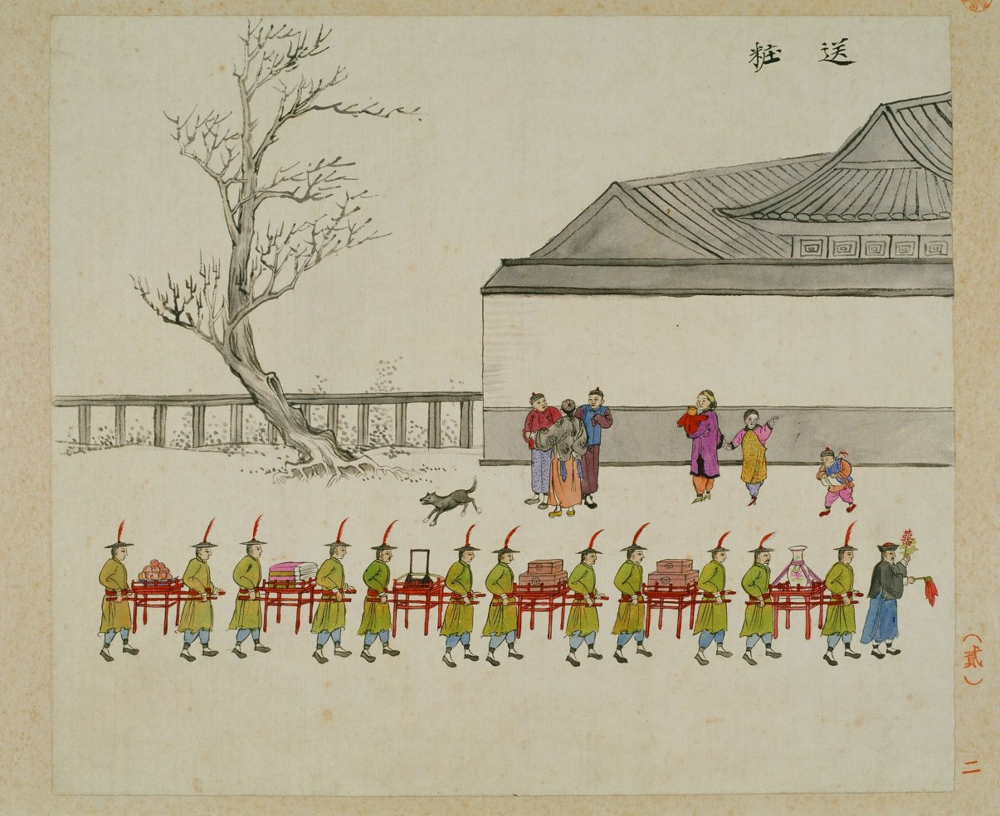
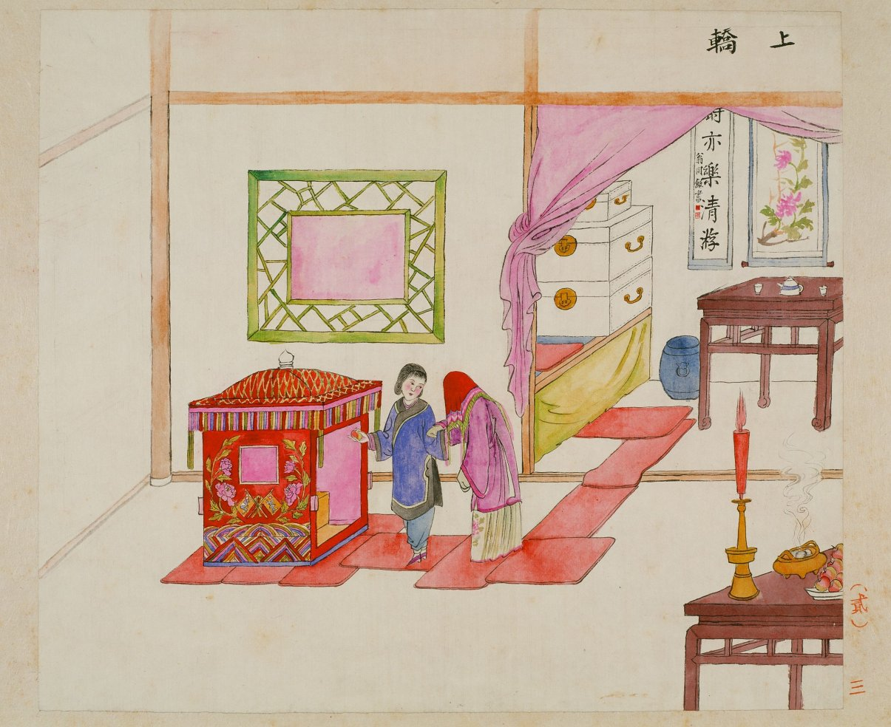
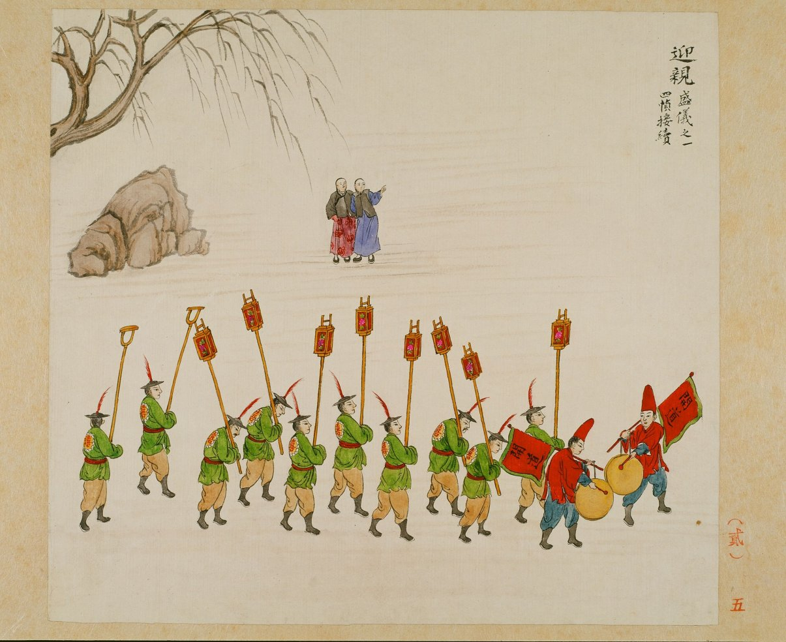
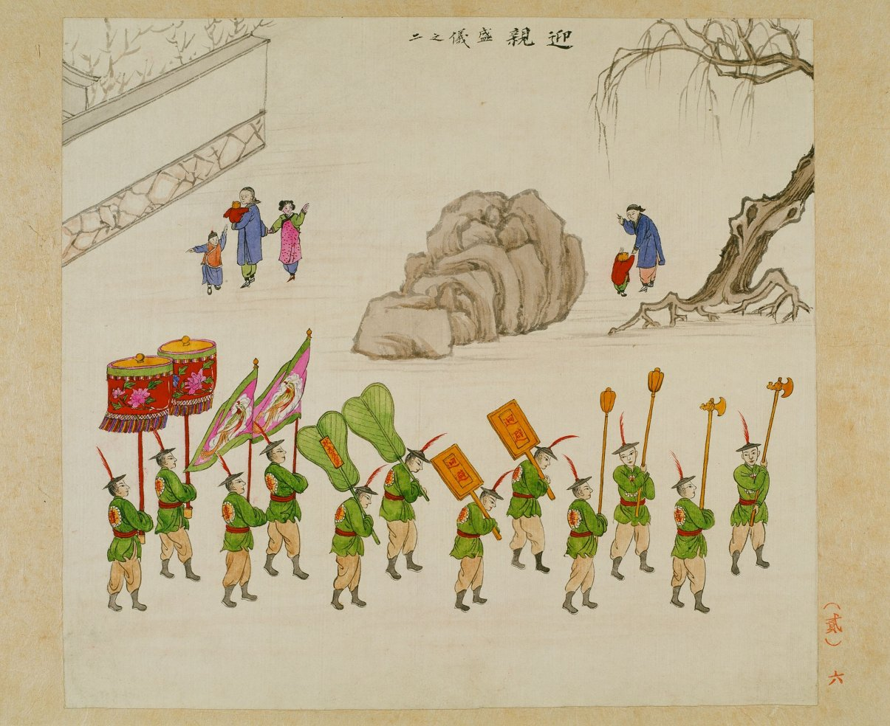
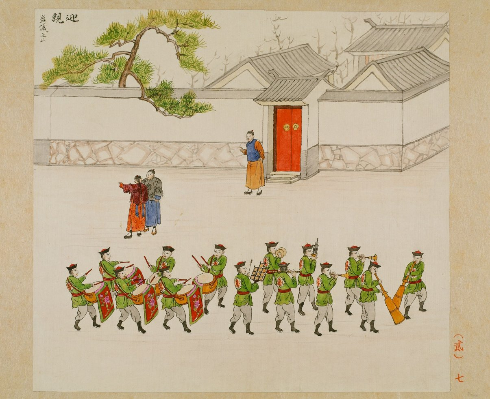
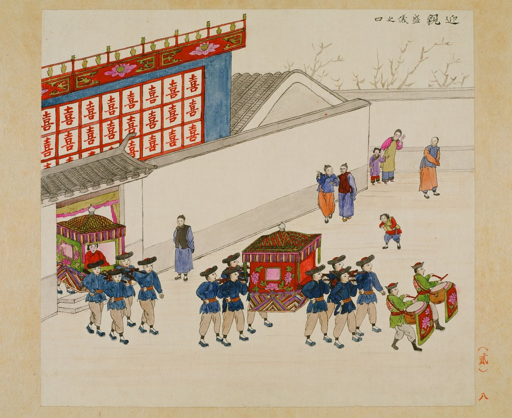
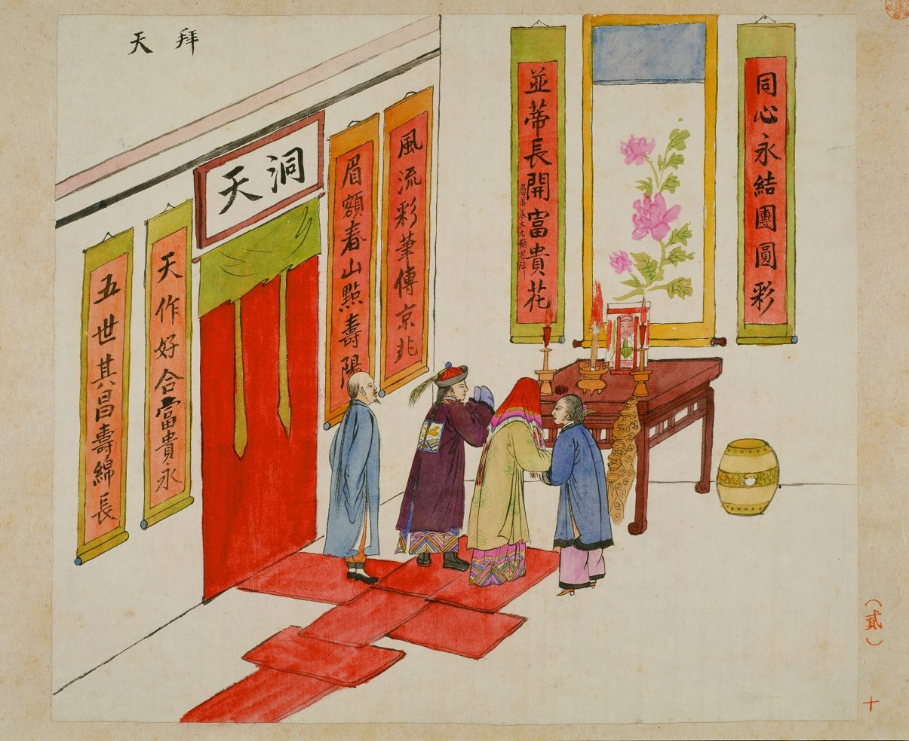
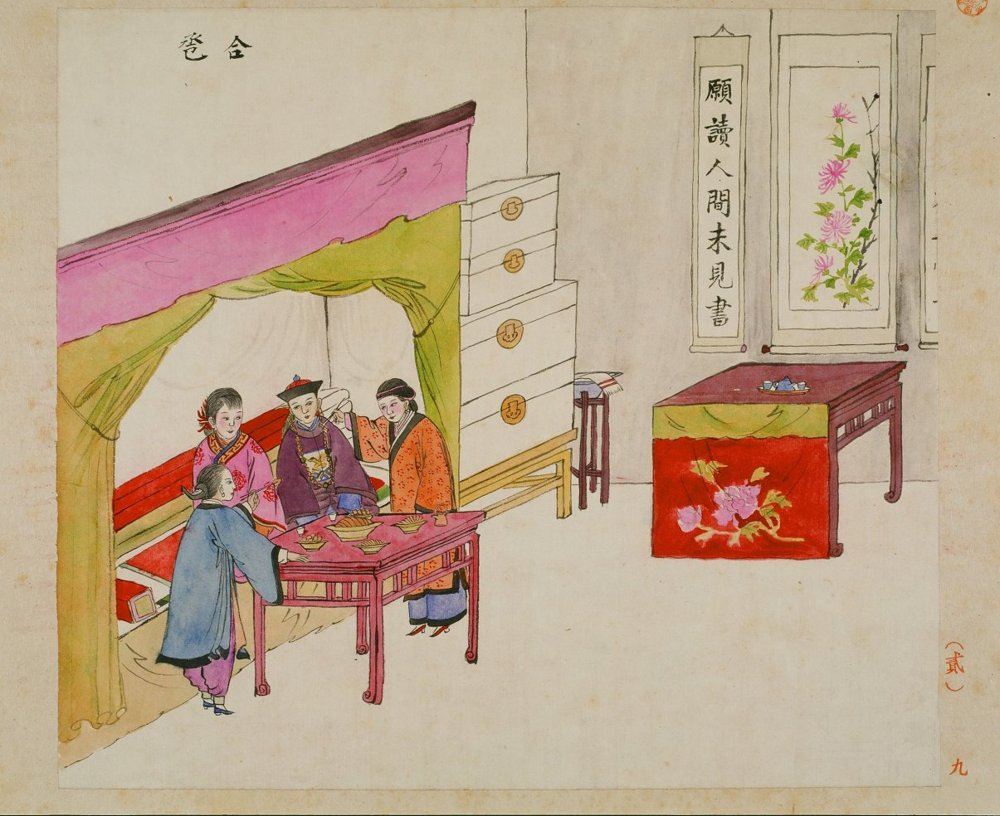

北京风俗图谱 · 礼俗第二
百年前结婚
寻常男人也能当一天官
是谓新郎官

清代的北京，婚礼可以僭用官家仪仗，开道锣、迴避牌、金瓜钺斧，新郎还要戴官帽。寻常人家一辈子就这一天用得上这套排场，所以叫新郎官。
婚礼那一天 · 清晨
搭棚结彩

《北京风俗图谱 · 礼俗第二》搭棚结彩图
如果屋内摆不下几十桌酒席，就请棚匠在院里搭喜棚。棚壁满贴红喜字，棚顶扎彩。搭棚在当年是个专门的行当。
婚礼那一天 · 上午
送妆

嫁妆抬盒上街，领头的举着囍字旗
嫁妆不走后门，专挑白天抬上街。食盒、镜台、衣料一样样摆给街坊看。嫁妆厚薄，都要让全胡同看见。
婚礼那一天 · 正午
上轿

新娘蒙盖头上轿，红毡一路铺进轿里
花轿抬进堂屋，新娘蒙盖头，脚不沾土。娶亲太太拿镜子照遍轿里轿外，再撒一把枣、花生、栗子、桂圆，取个「早立子」的彩头。
出门前还有一关：女家大门紧闭，叫几回门、塞了红包才开，说是避煞气。今天接亲堵门做游戏，就是这一关传下来的。《满汉礼俗》谓之闭门礼：闭门 · 叫门 · 开门
婚礼那一天 · 过街
开道

迎亲盛仪之一 · 开道锣与长竿囍灯
队伍最前是开道锣、开道旗，后面一排长竿，竿头各挑一盏囍字灯。白天也点灯，阵仗要做足。
婚礼那一天 · 过街
县太爷同款

迎亲盛仪之二 · 座伞、掌扇、迴避牌、金瓜钺斧
这套行头叫三半堂执事，意思是三半份銮驾。搁平时算僭越，结婚这天破例用。
婚礼那一天 · 过街
鼓乐

迎亲盛仪之三 · 大鼓、唢呐、笙、云锣、大号
吹吹打打穿街过巷。不用发帖，半条胡同都知道这家娶媳妇。
婚礼那一天 · 到门
花轿到门

迎亲盛仪之四 · 花轿在喜棚前落地
画里其实有两顶轿。帘子捂得严实的是新娘；敞着帘、露出红衣人的那顶，坐的是娶亲太太，夫家派去接亲的全福人，去时不挂轿帘，任人看。讲究人家最多用三乘轿，红轿归新娘，两顶绿小轿分属娶亲太太和送亲太太。
婚礼那一天 · 黄昏
拜天地

天地桌、喜烛、红毡。新人拜天地、拜祖宗、拜高堂
看画里这副喜联：同心永结团圆彩，并蒂长开富贵花。
婚礼那一天 · 夜里
合巹（jǐn）

交杯酒的老名字叫合巹：匏瓜剖成两瓢，各执一瓢同饮
注意新郎的穿戴：清朝亡了十三年（这本画册作于 1925 年），他照样顶戴补服。婚服大概是旧时代最顽固的角落。
后记 · Colophon
一百年过去
还剩什么
当年叫门塞红包，今天堵门闯关
轿里就撒过了
老理儿没变
今天婚庆公司全包
流程换了跑道，彩头一个没丢。